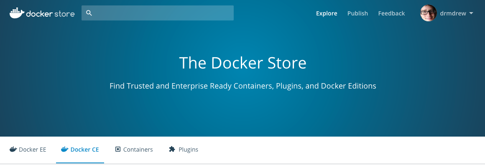

class: center, middle # Docker for X ## An lightning talk overview of: Docker for Mac, Windows, and Linux --- # Agenda 1. The Docker Store 2. Docker for Mac 3. Docker for Windows 4. Docker for Linux 5. Docker for AWS/Azure 6. Demo --- # The Docker Store https://store.docker.com/search?offering=community&type=edition <br/> Docker CE - Community Edition * Fedora, CentOS, Ubuntu, Debian * Mac * Windows * AWS, Azure --- # Docker for Mac https://docs.docker.com/docker-for-mac/ <br/> --- # Docker for Windows https://docs.docker.com/docker-for-windows/ For this talk I'm using the 17.05.0-ce-win11 version from the "edge" channel. <img src="images/docker-for-windows-about.png" height="200px"><br/> <br/> --- # Docker for Linux https://docs.docker.com/engine/installation/linux/ubuntu/ For this talk I'm using 17.05.0-ce on Ubuntu (17.04) <br/> --- # Docker for AWS/Azure https://docs.docker.com/docker-for-aws/ https://docs.docker.com/docker-for-azure/ --- # Demos --- # Questions? --- # Thank You!